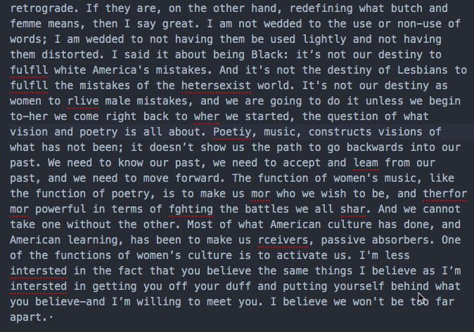

A beginner's guide to machine learning focused on text-generating bots + centering the needs of communities interested in working with their own texts, archives, and “small data”.
This project was made possible thanks to the mentorshop and support offered by the ML5 Fellowship program, a partnership between the Processing Foundation and NYU’s Interactive Telecommunications Program that specifically focuses on ml5.js.
